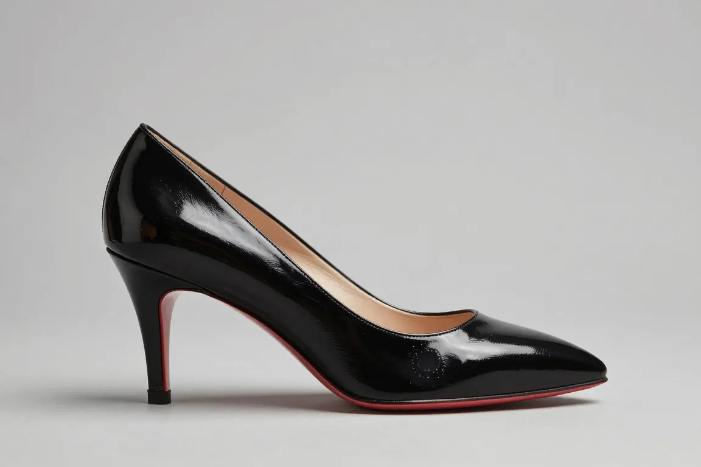

Каблук-шпилька
мода · 1953–present · также: Каблук-гвоздь, Туфля-лодочка с острым носком, Туфля-лодочка на шпильке
Туфля-лодочка на тонком каблуке 7–12 см, удерживаемом стальным геленком. Длинная узкая союзка, острый носок и каблук не шире карандаша на конце.

Главная идея
Тонкий каблук со стальной сердцевиной поднимает пятку и удлиняет ногу, так что туфля — это линия, равновесие и свод стопы.
Принципы дизайна
- Ставьте каблук 7–12 см и сужайте его до 1 см и меньше на конце.
- Вставляйте в каблук стальной стержень, чтобы он нёс вес тела.
- Ставьте в свод стальной геленок, чтобы подошва не провисала.
- Кройте длинную острую союзку; показывайте расщелину пальцев или маленький закрытый носок.
- Ставьте каблук прямо под центр пяточной кости.
- Режьте горло низким, чтобы виден был подъём.
- Покрывайте туфлю одним материалом и одним цветом, с подобранным каблуком.
Антипаттерны
- Толстый каблук-столбик
- Квадратный или круглый носок
- Платформенная подошва
- Туфля с декором на каждой части
- Плоская мягкая подошва, гнущаяся в своде
Палитра
Родословная
- Развился в
- Глэм-туфля на платформе
- Развился из
- Танцевальная туфля ар-деко
- Скрещивается с
- Нью-лук
Использовать
SKILL.md · tokens.css · исходный JSON · открыть в демо